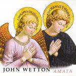

| Artist: | John Wetton |
| Title: | Amata |
| Label: | Metal Mind Records MMP CD 0940 |
| Length(s): | 37 minutes |
| Year(s) of release: | 2004 |
| Month of review: | [12/2004] |
| 1) | The Circle Of St. Giles | 1.52 |
| 2) | Mondrago | 1.35 |
| 3) | Heat Of The Moment | 4.15 |
| 4) | Book Of Saturday | 2.53 |
| 5) | The Smile Has Left Your Eyes | 3.18 |
| 6) | Hold Me Now | 5.26 |
| 7) | Emma | 3.01 |
| 8) | Battle Lines | 5.30 |
| 9) | Night Watch | 3.11 |
| 10) | You're Not The Only One | 3.46 |
| 11) | I Believe In You | 2.28 |
Heat Of The Moment is a must on a Wetton live album. The tone is different here since we are doing things acoustic and not catchy. However within this setting Wetton is likely to focus on the acoustic and balladic tunes, such as the well-known Book Of Saturday. An example of such a ballad is the rather boring The Smile Has Left Your Eyes. We continue with the Wetton ballads in the form of Hold Me Now (the quality is going up), the poignant Emma and Battle Lines (with its instantly memorable chorus).
We interrupt for a short King Crimson tune, the Night Watch. Like Book Of Saturday, it remains a quality song. Back to the Wetton tunes with the mellow You're Not The Only One. Finally we come to I Believe In You, which continues the set line (lighter fluid anyone?). I think I would have liked from more Mondrago like pieces. It all gets to be a bit too romantic for me here.